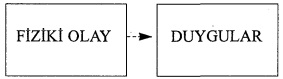
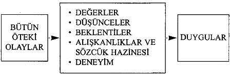
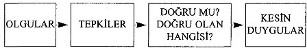

Birisi abartılmış kelimeler kullandığında ne hissedersiniz? "Beni hiç dinlemiyorsun?" "Hep geç kalıyorsun." "Her şey senin istediğin gibi olsun istiyorsun."
Aşın sözler aşırı tepkileri kışkırtır. Gibran'm da belirttiği gibi, herkes, bütün, her zaman ve hiç kimse gibi kuvvetli kelimeler genellikle hakikate dayalıdır. Hakikat abartıldığında diğer kişiler kendini kaybeder, ya hep ya hiç nitelendirmelerini adil bulmayarak şiddetle protesto eder ve hemen istisnalara işaret etmeye başlarlar.
Somut mu Öznel mi?
"İletişimde kesinlik önemlidir; yanlış ya da eksik anlaşılan bir kelimenin düşüncesiz ani bir eylem kadar çok felakete yol açabildiği şimdiki pamuk ipliğine bağlı dengeler çağında bu çok daha önemli hale gelmiştir."
- JAMES THURBER
Tartışmalarınızı öznellikten koruyup nesnel kılabilmek için gözlemlerinizi somut gerçek yaşam olaylarına dayandırın: "Kediye yemek vermeyi her zaman unutuyorsun. Açlıktan ölsün mü istiyorsun?" türünden kesin olmayan bir itham öfkeli bir tepki yaratacaktır. İfade iki kere kışkırtıcıdır, çünkü aşırı sözcük aynı şekilde aşırı bir sonuçla bağlantılıdır. Oysa çocuğunuzun kediye yemek vermemesinden şikâyetçi olmak bir şeydir, onu kediyi sevmemekle itham etmek başka bir şey. Öfkeli bir itirazla karşılaşacağınız kesindir.
Bunun yerine şöyle diyemez misiniz: "Bu hafta kedi üçüncü kezdir yemeksiz kalıyor. Ne oluyor?" Açıklama talebiyle bağlanmış bu somut gözlem, konuşmayı kişiden çok olay üzerinde yoğunlaştıracaktır. Çocuğunuzu bir kavga havasına sokmak yerine, ona bir açıklama getirme ve tutumunu düzeltme fırsatı verin.
Atölye çalışmalarından birinde tam bu noktaya geldiğimizde, bir bayanın yüzünün kızardığını görerek kendisine ne düşündüğünü sordum. Şöyle dedi: "Çocuklarımın niçin sözümü dinlemediğini şimdi anladım. Sanıyorum her şeyi abartarak kendi inanılırlığımı zedeledim. Her şeyi abartmayı alışkanlık haline getirmiştim: 'Jeffrey, taraçadan içeri girdiğinde tel kapıyı kapatmanı sana milyon kez söyledim.' Ya da 'Lisa, sana bin keredir söylüyorum, sütü buzdolabına geri koy.'"
Sonra şunu sordu: "Bu alışkanlıktan nasıl vazgeçebilirim?" Kendisine, şikâyetlerini çocuklarını cevap vermeye zorlayacak sorular şeklinde formüle etmesini önerdim. Çocuklara sürekli ne yapmaları gerektiğini söylemek yerine, "Jeffrey, taraçadan içeri girince ne yapmak lazım?" ya da "Lisa, bardağını doldurduktan sonra süt şişesini ne yapmayı düşünüyorsun?" gibi sorularla çok daha iyi sonuç alabileceğini anlattım.
Bir başka katılımcı, bir öğrenci olan Rita, "Keşke kolejdeki oda arkadaşım da şimdi burada olsaydı" dedi. "Benim tembel olduğumu düşünüyor. Geçen gece beni hiçbir zaman odamızı temizlememekle itham etti, kendisinin her zaman arkam
dan toplamak zorunda kaldığını, odaya bakan tek kişinin kendisi olmasından artık yorulduğunu söyledi."
Kendisine oda arkadaşının söylediklerinin doğru olup olmadığını sordum. "Tabii ki hayır. Tozu benim aldığımı, yemekleri benim pişirdiğimi ve her akşam bulaşığı benim yıkadığımı unutmak işine geliyor."
Rita, ya hep ya hiç türü açıklamaların duyguları niçin tahrik ettiğinin üçüncü bir nedenine işaret etmiş bulunuyordu. Bu, bu tür ifadelerin çoğu zaman eski eylemleri ya da eylemsizlikleri hedef almasıdır. Bu ise üçlü bir saldırı ortaya çıkarmakta, aşın bir suçlamayı adil olmayan bir hüküm ve geçmişin hesabının sorulması izlemektedir.
Rita'ya, aşın sözleri sorular şeklinde sahibine geri yansıtmasını önerdim. Suçlayıcı sözleri saldırgan olmayan bir şekilde geri aktarması oda arkadaşına ithamlarını yeniden tartma ve değerlendirme fırsatı verecek ve böylece münakaşa önlenebilecekti. Rita, kibarca ama kulaklanna inanamıyormuş gibi, "Ben hiçbir zaman evi temizlemiyorum?" diyerek oda arkadaşının yüzeysel ithamını tekrarlarken, bir yandan da "Bunu gerçekten de kasdetmiyorsun, değil mi?" der gibi kaşlarını kaldırabilir. Bu durumda oda arkadaşı belirsiz ithamlanm muhtemelen homurdanarak desteklemeye çalışacak, "İyi ama, dün gece bir saatim etrafı toplamaya gitti" diyecektir. Demek sorun bu. Oda arkadaşının kızgınlığının nedenini açığa çıkaran bu olgusal muhasebe, Rita'nm duygusallıktan uzak nesnel bir yaklaşım göstermesini sağlayacaktır. Ortalığı dağınık bıraktığı için özür dileyebilir ve odayı topladığı için arkadaşına teşekkür edebilir.
İthamların Çevresinden Dolaşmak mı, Uzun Uzadıya Yanıtlamak mı?
"Bilgelik sanatı, neyi görmezden gelmek gerektiğini bilme sanatıdır."
-WILLIAM JAMES
Eğer Rita oda arkadaşının geri adım atmayacağını ve hemen "Hayır, olamaz! Bir kere olsun etrafı topladığını hatırlamıyorum, kaldı ki..."diyerek saldırıyı devam ettireceğini öngörmüş olsaydı, yapabileceği en iyi şey, karşı kanıtlar öne sürmeye çalışmak yerine, suçlamanın çevresinden dolaşmak olurdu. Uzun uzadıya yanıtlamaya çalışmak, açıklamalar getirmek yerine, bilinçli olarak görmezden ya da duymazdan gelmek çok daha bilgecedir. Rita, oda arkadaşının ithamına karşı çıkmak yerine ("Sen kim oluyorsun da bana tembel diyorsun?"), çevresinden dolaşırdı.
Sandor Minab, "Nasıl bir insan olduğumuzu, görmezden gelmeyi tercih ettiğimiz şeyler kadar çok belirleyen başka bir şey yoktur" diyor. Rita, hakaret içeren tembel sözcüğünü duymazdan gelmeyi tercih ederek konuşmayı somut çözümlere yöneltebilir. Şöyle diyebilir: "Dairemizi nasıl temiz tutabileceğimizi tartışmak istiyorsan, bunu seve seve konuşmaya hazırım."
Dehşet Dolu Sözcükler Felakete Yol Açar
"Hayatımda çok felaket acısı çektim. Çoğu hiçbir zaman gerçekleşmedi."
- MARK TWAIN
Dostlarımdan Bili, bu fikri kullanarak nişanlısının abartılı sözcüklerle konuşma alışkanlığını değiştirmeyi başardı. "En kötü, korkunç ve imkânsız gibi sözcüklerin de aşırı sözcükler olduğunu düşünüyorum. Winona çok hareketli bir kadındır ve bu diline de yansır. Sık sık şöyle şeyler söylerdi: 'Bu yediğim en kötü yemekti.' 'Bu elbisenin içinde korkunç görünüyorum.' 'Seninle konuşmak imkânsız.' 'Hiçbir yere gitmez olduk." Bu tür rahatsız edici sözcükleri kullana kullana kendini sinir küpüne çevirmişti."
Bili, doğru bir saptamada bulunmuştu. Stres araştırmacı Hans Selye şunu bulmuştur: "Strese yol açan olaylar değildir, stresin nedeni sizin olaylan yorumlayış tarzmızdır." Aşağıdaki diyagram size bunun nasıl işlediğini gösterecektir.

Fiziki olaylar (örneğin ayak parmağınızı incitmeniz, soğuk suya atlamanız) doğrudan duygu üretirler. Ne olduğunu düşünme ya da deşifre etme ihtiyacı duymazsınız. Parmağınız acır. Bedeniniz ürperir.

Bütün öteki olaylar (örneğin televizyonunuzun bozulması) zihninizde işlemden geçer ve zihniniz; değer, düşünce, beklenti, deneyim ve alışkanlıklarınız ve sözcük hazinenize dayalı duygular üretir. Öfke duyabilirsiniz ("Tam bozulacak zamanı buldu! En sevdiğim program başlamak üzere"), istemeden rahatlayabilirsiniz ("Aerobik dersine gitmek için işte sana bir fırsat!"), sinirlenebilirsiniz ("Allanın cezası çocuklar gene uzaktan kumandayla hepsini birbirine karıştırmışlar") ya da genel bir umutsuzluğa kapılabilirsiniz ("Bu evde de her şey bozuluyor").
Duygularınız Olgulara Uygun Olsun
"Kendi başına iyi ya da kötü olan bir şey yoktur, bunu düşüncelerimiz yapar."
- WILLIAM SHAKESPEARE
Shakespeare'in saptamış olduğu gibi, koşullar kendi başlarına iyi ya da kötü değildir. Bu, nasıl yorumladığınıza bağlıdır. O nedenle, duygularınızın duruma uygun olabilmesi için olan biteni kendinize çok iyi tarif etmeniz gerekir. Tarifinizi abartırsanız, duygularınızı ve belki çıkaracağınız sonuçlan da abartırsınız. Çizimleriniz aşırı olumsuzsa görünümünüz de öyle olacaktır.
Duygulannızm olgulara uygun olmasını nasıl sağlayabilirsiniz? Bir şey olduğunda derhal düşüncelerinizin kesinliğini sınamak için kendinize şunu sorun: "Bu doğru mu?" Önünüzde bir fatura yığını duruyor ve siz de "Bunlan ödeyebilmek için yüz yıl çalışmam lazım" diye düşünüyorsanız, kendinize bunun doğru olup olmadığını sorun. Eğer doğru değilse (aşırı ifadeler nadiren doğrudur), bu kez kendinize şunu sorun: "Doğru olan hangisi?" Kesin olun. O zaman, belki de bütün bu borçlan ödemenin ancak üç ayınızı alacağını göreceksiniz. Şimdi, felaket tellallığı yapmak yerine durumu doğru değerlendirmiş bulunuyorsunuz.

Bili, kendisiyle bu konu üzerine konuştuğumuz günün akşamı Winona'yla buluştuğunu anlattı. Daha arabaya biner binmez alışılmış şikâyetlerine başlamış: "Hiçbir şey yolunda gitmiyor..." Bili dönüp sormuş: "Winona, bu doğru mu? Hiçbir şey iyi gitmiyor mu?" Bu soru, tiradını anında kesmiş.
Önce bir süre sessiz kalmış. Sonra başını sallayarak, "Hayır doğru değil. Doğru giden birçok şey var."
"Bu 'dehşetlileştirme' alışkanlığı ve dehşetli sözcüklerin işleri nasıl olduğundan da kötüleştirdiği üzerine konuşmaya devam ettik. Durumlara tepki gösterme tarzında düzgün kalmada birbirimize yardımcı olmaya söz verdik. Bir şeyi korkunç olarak yorumladığımızda kendimize, 'Bu doğru mu? Doğru olan hangisi?' diye sormayı kararlaştırdık. Gittiğimiz filmden hoşlanmadığımızda, bu bir felaket değildir. Pizzamızı mantarlı söylemeyi unuttuğumda, bu idamlık bir suç değildir. Tırnağını kırdığında dünya batmaz. Korkunç ve affedilmez gibi olumsuz sözcüklerin yerine ilginç ve elverişsiz gibi sözcükler geçirmeye karar verdik.
"Nefret etmek ve canına okumak gibi sözcükleri kullanmayı da durdurduk. Bir şey yanlış gittiğinde, 'Böyle bir şey olduğunda nefret ediyorum' ya da 'Bunun için onun canına okuyacağım' demek bugünlerde moda oldu. Bunlar şiddet dolu sözler; bu acımasız sözcüklerin dilimizde yer etmesine izin vermemeye karar aldık. Şimdi her şeyi bir talihsizlik olarak nitelemek yerine, olayları daha açık bir gözle görebiliyoruz. Böylece ilişkimiz ve birlikte geçirdiğimiz zaman çok daha zevkli hale geldi."
Lügatimize ne kadar da çok şiddet dolu olumsuz sözcük girdi! Bu olumsuz imajların sinsi etkisi insanları, Gals-worthy'nin "havaya zindanlar kuranlar" olarak tarif ettiği karamsarlar haline getiriyor. Daha çok olumlu imajlar kullanmaya özen gösterirseniz, o zaman kendi inşa ettiğiniz zindanlardan dışarı tırmanabilir ve dünyanın ne kadar harika bir yer olduğunu görebilirsiniz.
AŞIRILIĞA GİTMEKTEN SAKINMAK İÇİN EYLEM PLANI
Hafta sonu için birkaç film kiralamak üzere çocuklarınızla birlikte videocuya gidiyorsunuz. Çocuklarınız şiddet dozu yüksek bir filmi seçiyor, siz ise bundan vazgeçmelerini öneriyorsunuz. Hiçbir zaman istedikleri filmi seyretmelerine izin vermediğinizi söylüyorlar. Nasıl tepki gösterirsiniz?
UNUTMANIZ GEREKEN SÖZLER
İthamlarını reddeder ve kendinizi hasım haline sokarsınız. "Hiç de öyle değil, bunun doğru olmadığım biliyorsunuz. Geçen hafta iki filmi de siz seçmiştiniz."
Çocuklarınız, "Bize hep Disney filmleri seyrettirmek istiyorsun" der, siz de reddedersiniz.
"Bu gülünç. Aylardır bir Disney filmi görmedik."
Abartılı bir şekilde sizin hiçbir zaman onların isteklerini dikkate almadığınızı söylerler, siz de haksız yere itham edildiğiniz duygusuyla öfkeyle tepki gösterirsiniz. "Elbette isteklerinizi dikkate alıyorum. Bu videocuya benim canım film seyretmek istiyor diye mi geldik sanıyorsunuz?"
KULLANMANIZ GEREKEN SÖZLER
Abartılı sözlerini vurgulu bir ifadeyle tekrarlarsınız. "Hiçbir zaman istediğiniz filmi seyretmenize izin vermiyorum?"
Ya hep ya hiç şeklindeki ithamlarını kendilerine geri yansıtır, sonra susarsınız. "Size hep Disney filmleri seyrettirmek istiyorum? "
İthamlarını yanıtlamak yerine duymazdan gelerek çözümler üzerinde odaklanmaya yönelirsiniz.
"Zevkle seyredebileceğiniz bir şey bulabilirsiniz sanıyorum. Yaşınıza uygun filmler arasından seyretmek istediğiniz hangisidir?"
Üçüncü Kısım